Google 地圖每日行程動態模擬・梯次天氣速查・完整互動手冊
TPE 台北 23:45 ➔ PRG 布拉格 08:00
PRG 布拉格 10:30 ➔ TPE 台北 07:20(+1日)
| 編號 | 姓名（身份） | 分房配置 | 備註 / 特殊需求 |
|---|
| 房型 | 現金價 / 人 | 刷卡價 / 人 |
|---|---|---|
| 雙人一室 | $88,500 | $90,000 |
| 兒童佔床 (2～12歲) |
$86,500 | $88,000 |
| 三人一室 | $86,500 | $88,000 |
| 單人一室 | $109,500 | $111,000 |
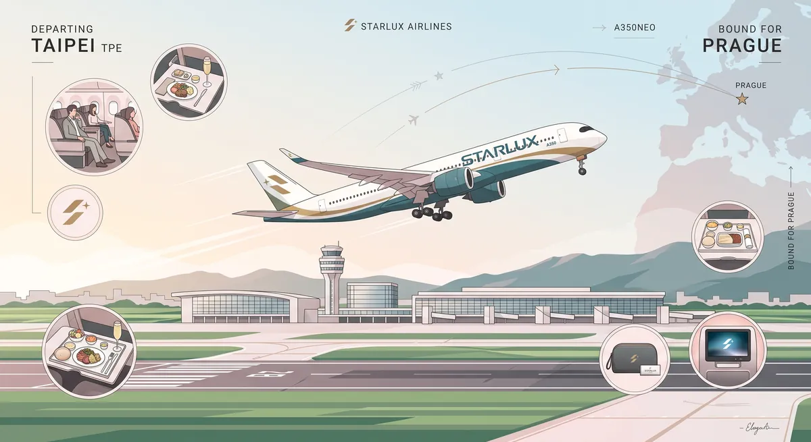
今日團體集合於公司，搭車前往桃園國際機場，搭乘星宇航空豪華客機直飛捷克首都《百塔之城》布拉格。班機將於翌日早晨抵達布拉格哈維爾國際機場，由於捷克冬令時間比台灣慢 7 小時，抵達時正好展開充實的波希米亞古鎮之旅，謹祝您機上夜晚愉快！
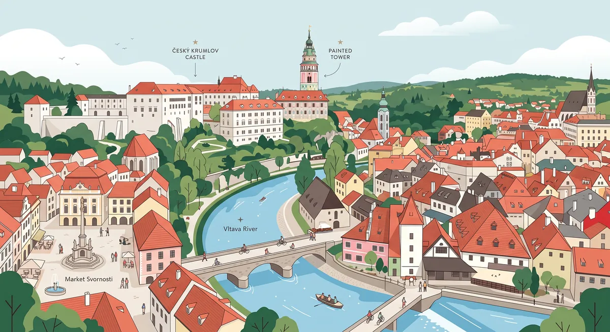
契斯科庫倫洛夫被公認為捷克最美麗的中世紀古鎮，維第格王朝在此興建的美麗城堡，讓您如同墜入歷史歲月的時光洪流之中，其建築、街道、教堂、要塞等散發出濃郁的古典氣息，令人發思古之幽情。曾有人說，想要當中古世紀的古人，就要到至今連麥當勞都沒有的「契斯科庫倫洛夫」。這個如珠玉般風情的中古世紀小鎮，風情如詩如畫，伏爾他瓦河蜿蜒而過，悠緩而寧靜，從城堡區俯瞰小鎮，紅瓦白牆的屋子在陽光下展露出迷人的風情，時光彷彿停留在十八世紀般，照亮了彩繪塔、走過玫瑰家族等三朝領主的輝煌歲月。
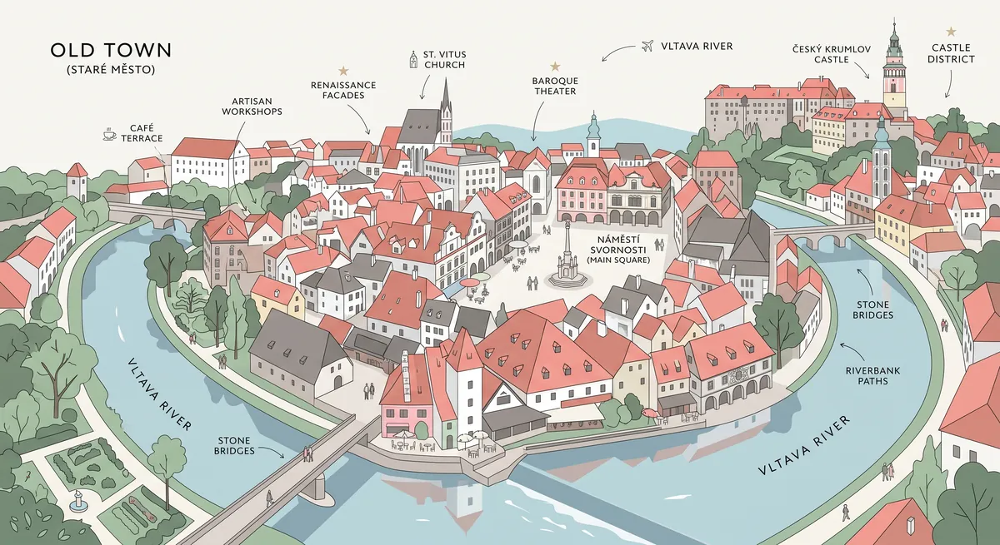
被伏爾他瓦河以 S 型蜿蜒環繞，巧妙地將古城分為兩部分，東北是河左岸以古堡為主的城堡區；西南則是河右岸以市政廣場為中心的舊城區。庫倫洛夫城堡，以哥德式的形式建在山頂，不論在市區任何地方抬頭都能望見，城堡由四十棟建築物組成，規模之大，在捷克境內僅次於布拉格城堡。千萬別錯過舊城區的巷弄中，有數不清各式各樣的特色商店，像是琳瑯滿目的木造玩具、晶瑩剔透的波希米亞水晶製品等，都是選購特色紀念品的好地方。傍晚直接下榻於市政廣場旁的 Hotel OLDINN，輕鬆散步賞古鎮夜色。
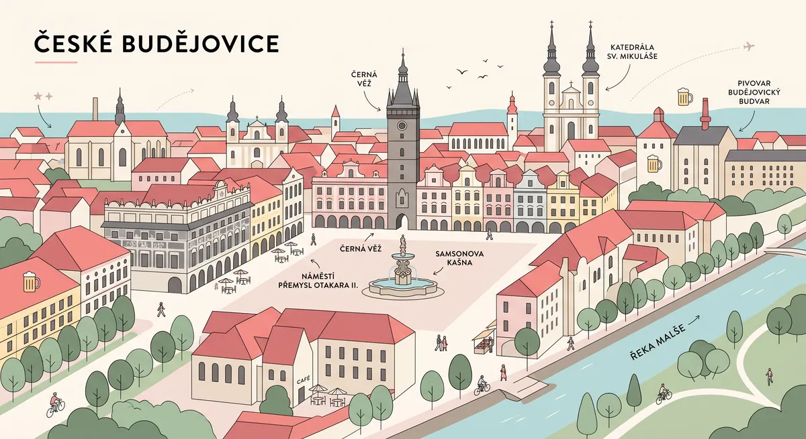
舊稱波希米亞布德維斯是捷克城市，南捷克州的首府和最大城市，天主教捷克布傑約維采教區和南捷克的中心。在途中，我們會在布傑約維采短暫停留。這是一座迷人的歷史小鎮，被稱為原創百威啤酒的故鄉。在這裡，您可以在主廣場上稍作漫步，參孫噴泉所在的廣場－普熱米斯爾·奧托卡二世廣場以及黑塔。百威啤酒源於該地，13世紀起該地就以釀造啤酒而知名。當地最著名的啤酒公司是布德瓦啤酒。
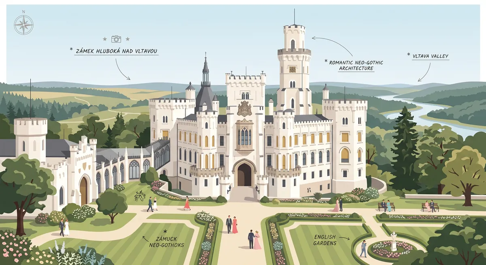
這座優雅的白色宮殿以英國溫莎城堡為靈感，是捷克共和國最美麗的浪漫主義城堡之一。城堡四周環繞著英式皇家花園和自然風光，中午特別安排於城堡旁的 Hotel Štekl 享用捷克三道式套餐。
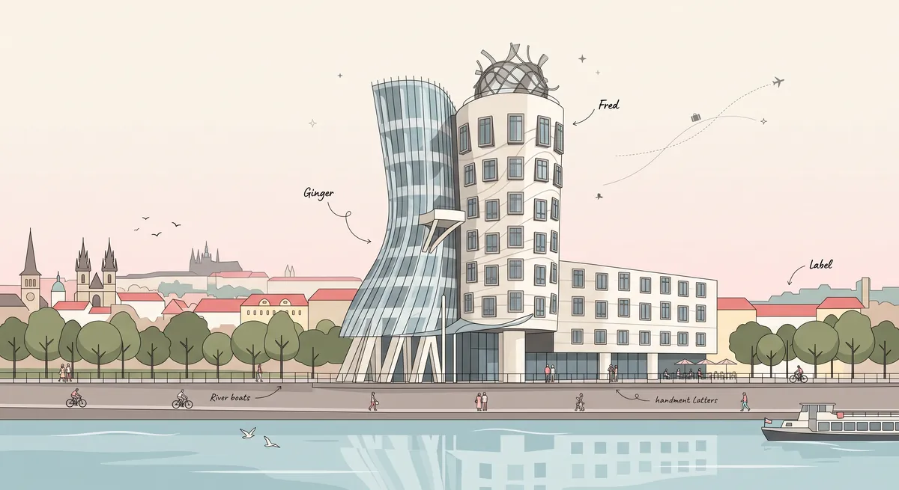
「跳舞的房子」（Tančící dům）位於捷克布拉格伏爾塔瓦河畔，是當代解構主義建築的傑作。這棟建築由加拿大建築師法蘭克·蓋瑞（Frank Gehry）與克羅埃西亞籍建築師弗拉多·米盧尼克（Vlado Milunić）合作設計，於1996年完工。其造型靈感源自好萊塢傳奇舞伴弗雷德與琴吉，因此又名「弗雷德與琴吉之屋」。建築由兩座相互依偎、扭轉的塔樓組成：一座是以混凝土為主的實體，代表男舞者；另一座則是呈現婀娜曲線的玻璃塔，象徵穿著裙擺的女舞者。這種大膽的動態美感，打破了傳統建築的對稱與剛性，現已成為布拉格除古城外的另一座標誌性地標。
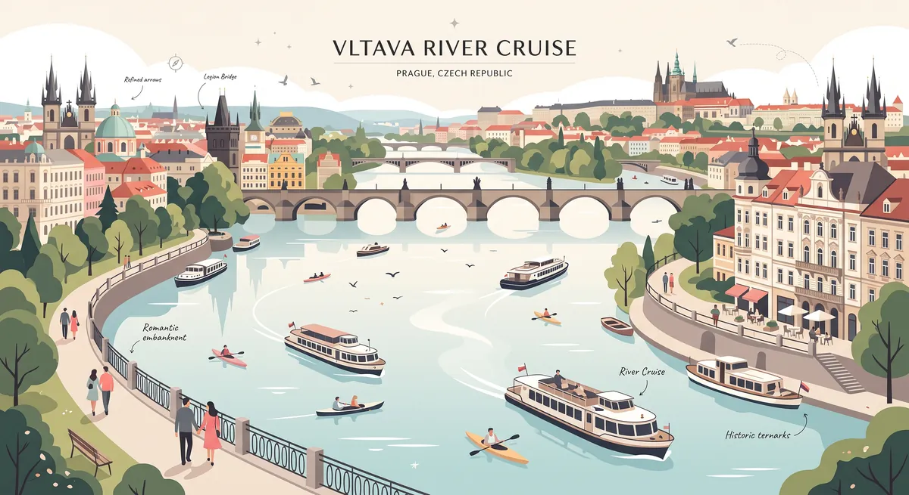
伏爾他瓦河遊船：捷克著名文學家卡夫卡曾寫給女友一封信中說：我最喜歡划著我的小船沿伏爾他瓦河逆流而上，然後仰臥在船中順流而下，欣賞不同形式的橋。一個城市，能有條美麗的河流蜿蜒其中，如同為這個城市畫上了一條柔美的線條，城裡也就有了個能讓戀人依偎漫步的浪漫場景。
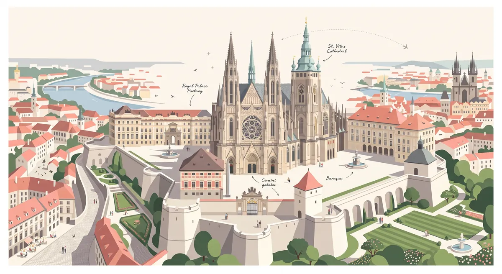
布拉格市區觀光：晨曦中迎接第一道陽光落映眼簾，體驗伏爾他瓦河上布拉格的夢幻氣息，猶如置身於時光幻影絕美的中古世紀！走在中古世紀靜靜的街道上，曾經風起雲湧的歷史歲月，幻想著極盛時期萬人擾嚷洶湧的繁華景象，心靈更添平靜！邂逅布拉格就讓我們從古堡皇宮開始。
慕夏美術館：布拉格慕夏美術館位於18世紀的薩瓦林宮（Savarin Palace）內，是一座充滿歷史風華的宮殿建築。美術館收藏捷克著名藝術家阿爾豐斯·慕夏(Alfons Mucha)的經典作品，包括海報、繪畫與手稿，展現他獨特的新藝術風格。結合宮殿優雅空間與藝術之美，透過細膩的觀賞體驗，旅客都能輕鬆感受慕夏作品中的精緻與魅力。
聖維特大教堂 (St. Vitus Cathedral)：最巨大雄偉的教堂是整個城堡境內最顯眼的建築物，同時也是歐洲最美的教堂。1344年布拉格升為總教區後，查理四世希望有座可以容納多人、加冕和安息等作用的教堂，便下令擴建，於1929年完全竣工，因此，除了哥德式的尖塔鐘樓外，也融入了文藝復興、巴洛克的風格，如網狀拱頂、玫瑰窗和金色大門等，是世界三大哥德式教堂之一。
※ 聖維特教堂例行性於周日上午舉辦彌撒，遇教堂彌撒或其他節慶因素沒有辦法入內參觀，行程順序將前後調整，或改由城堡區聖喬治教堂替代。
布拉格城堡 (Prague Castle)：矗立在布拉格《城堡區》Hradčany山崗上的巨無霸《布拉格城堡》Prague Castle是布拉格最顯著的地標。這座城堡佔地高達7萬平方公尺，是金氏世界紀錄上全世界最大的古堡，不僅是捷克共和國的象徵，也讓布拉格躋身全球最美城市之一，到豐富的藝術收藏和精美的建築設計。世界上最大的城堡非布拉格城堡莫屬！在城堡裡悠閒漫步，欣賞在一千多年來作為歷任捷克國王、皇帝及總統官邸的布拉格城堡之美。
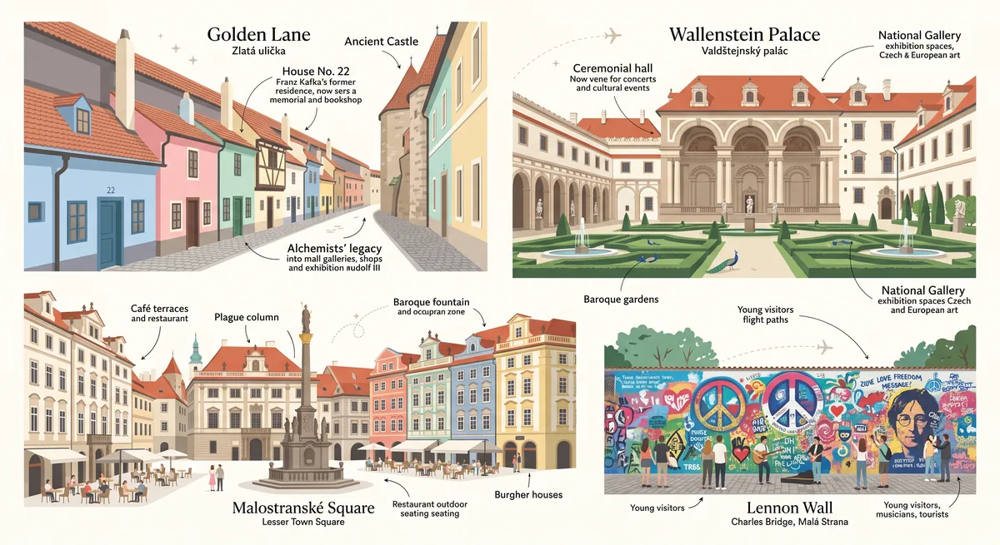
布拉格黃金巷 (Golden Lane)：位於布拉格城堡內，一條保留了中世紀風格的巷子。數間又矮又窄接連著的房子，外牆漆著繽紛的顏色，原是侍衛的住所，一度淪為窮人集散地，最後是16世紀一群鍊金士於此煉製黃金而得名。目前作為觀光開放，有畫廊、商店、展覽館。另外，別忘了參觀22號小屋，這裡是世界知名的布拉格作家法蘭茲．卡夫卡（Franz Kafka）的故居。參觀過黃金巷，布拉格城堡之旅才算完整，這條小巷與古城牆接鄰，呈現出令人驚豔的別緻街景。魯道夫二世皇帝以渴望找到傳說中長生不老藥與點金石而聞名，據說為魯道夫二世皇帝效力的煉金術士就是居住在這些色彩繽紛的小屋裡。
華倫斯坦宮：華倫斯坦宮（Wallenstein Palace）是位於捷克布拉格的一座巴洛克式宮殿，始建於1623年，由阿爾布雷希特·馮·華倫斯坦（Albrecht von Wallenstein）下令興建，用來展示他的財富和權力。宮殿內設有一座大型的庭院，以及許多裝飾豐富的房間和大廳，包括一個富麗堂皇的宴會廳，現在用作音樂會場所。此外，華倫斯坦宮也是布拉格的國家畫廊所在地，收藏了大量捷克藝術家的作品，以及一些歐洲藝術家的作品。遊客可以在這裡欣賞精美的建築設計。
小區廣場 (Malostranske)：周圍有著一系列歷史宮殿及保護建築，曾作為市場、政府活動和執行司法等場所，現今則因附近有多家餐廳及旅遊景點，吸引遊客前來。
布拉格列儂牆：布拉格的列儂牆（Lennon Wall）是一個著名的塗鴉牆，位於城市的查理大橋對岸的馬爾斯區。這個牆壁在1980年代成為了紀念約翰·列儂的地方，後來逐漸成為了反共主義的符號，許多人都會在這裡留下自己的塗鴉和訊息。
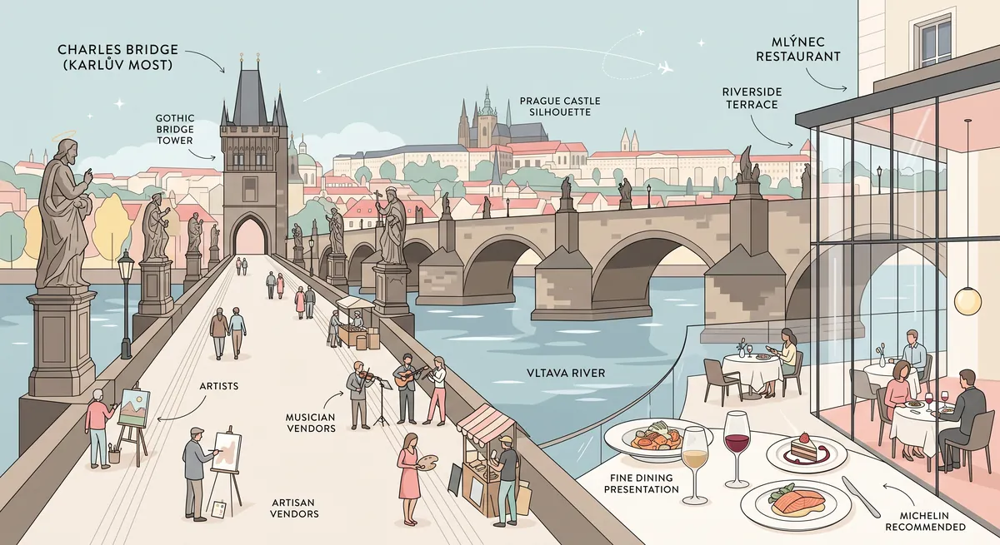
查理士橋畔餐廳：安排於布拉格市區最美麗的觀光景點查理橋下的 MLYNEC RESTAURANT 查理士橋畔餐廳享用西餐、享用美食，MLYNEC 曾多度入選米其林推薦的指南，安排前湯、主餐(鮭魚)、甜點，在優雅的環境內享受法式浪漫融合捷克料理供法的美食饗宴。
到查理大橋上尋見浪漫的真諦 (Charles Bridge)：查理大橋總是為藝術家、攝影師與詩人們提供源源不絕的靈感。遠景中布拉格城堡的剪影浮現，巴洛克時期的雕像佇立橋的兩側，無庸置疑這裡就是全歐洲最漂亮的地方。東歐現存最古老的石橋。建於十四世紀，全長520公尺，兩旁聳立了30座雕像，108聖者的古橋，已然成為布拉格觀光生活的代表。橋兩端有哥德式橋，兩側欄杆上有以宗教故事為題的15座聖像，偶有街頭藝人或民俗藝品賣者吆喝其間，輕鬆有趣；它也同時是連結舊城區和布拉格城堡區的唯一橋樑。
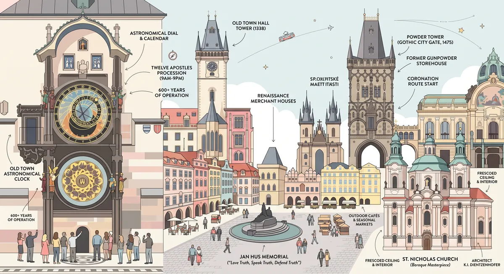
舊城廣場：布拉格舊城的中央地帶，鋪滿石板道路，聚集許多觀光客廣場一角有文藝復興時期的拱型建築，已改成咖啡廳、禮品店，還有不少小吃攤和街頭藝人在此演出、舊城廣場座落著美麗的提恩教堂與胡斯紀念碑鐫刻著：愛真實、說真實、守衛真實三名言。
布拉格老城天文鐘 (Old Town)：壯麗的市民會館是全球最大、保存狀態最好的建築物之一，在這裡，時間彷彿回到了神奇的蒸氣時代。市民會館是珍貴的新藝術風格建築，在寬廣的共和國廣場上一個鮮明的地標建築，過去通往銀礦庫特納霍拉的重要貿易路線就是從這裡經過。由於這個地點具備戰略重要性，因此捷克的統治者最初就是在這裡建造宮殿，傳統上加冕遊行也是以這裡作為起點，如今卻只剩下緊鄰市民會館的哥德式火藥塔依舊屹立在原地見證過往的輝煌。舊市政廳這座地標佇立在舊城廣場上已然好幾個世紀。因為吸睛的天文鐘和足以俯瞰布拉格歷史城區的高塔，舊市政廳始終都是最熱門的景點。其哥德式建築始建於1338年。天文鐘是中世紀的科學奇蹟。每一天，從早上九點一直到晚上九點，布拉格的遊人都能站在舊市政廳前欣賞天文鐘，看十二使徒輪流出來打招呼。這件驚人的科技結晶如今已運作了六百年，天文鐘在每個整點都會活過來，演出引人入勝的表演。
火藥塔 (Powder Tower, Prague)：建於1475年，是布拉格舊城門，17世紀時曾用來貯藏火藥後改稱火藥塔，如果登上65公尺的高塔，可遠眺市區，欣賞外觀華麗的新市政廳以及新城區的瓦茲拉夫廣場等，體會布拉格「百塔之城」的風情。
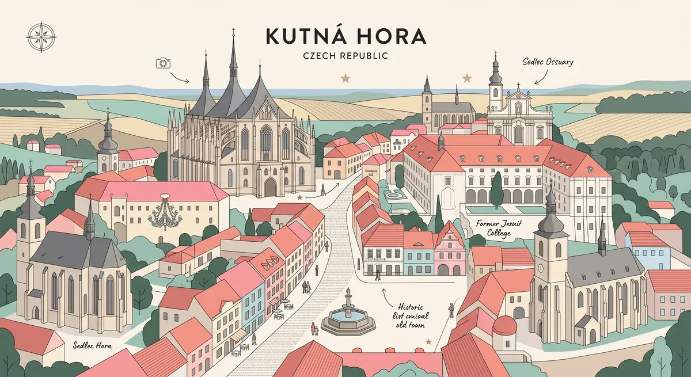
庫特納霍拉 Kutná Hora：是捷克共和國中波希米亞州的一個城市。這座城市在十二世紀由日爾曼人作為定居點而創建。13世紀末時已發展為波希米亞地區最具活力和最富裕的城市之一。
聖母升天和施洗者聖約翰教堂：一座巴洛克哥德式教堂屬於庫特納霍拉的世界文化遺產區域，內部融合哥德樣式與巴洛克樣式。
人骨教堂：聯合國教科文組織列為世界遺產的塞德萊茨骸骨教堂，位於庫特納霍拉，聽起來很恐怖，但其實這些骸骨來自於中世紀的黑死病與戰爭後的死者，19 世紀時由木雕藝術家弗朗提謝克·林特（František Rint）將這些骸骨重新整理並藝術化擺放。繼續前往庫特納霍拉的歷史中心，在中世紀餐廳品嚐傳統的捷克午餐。在舊城區的鵝卵石街道上輕鬆漫步後，經過一所前耶穌會學院，欣賞美麗的風景。
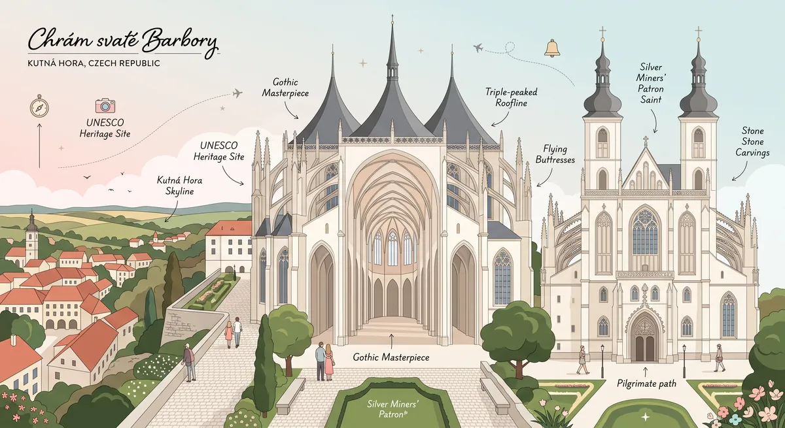
這是庫特納霍拉皇家城鎮的哥德式地標，也是聯合國教科文組織世界遺產。這座宏偉的晚期哥德式大教堂，始建於14世紀後半，是捷克最傑出的哥德式建築之一。其建造歷時數百年，期間因戰爭等因素多次中斷，展現了不同時期的建築風格演變。教堂內部精美的彩繪玻璃與宏偉的管風琴，皆是藝術與信仰的結晶，令人讚嘆。
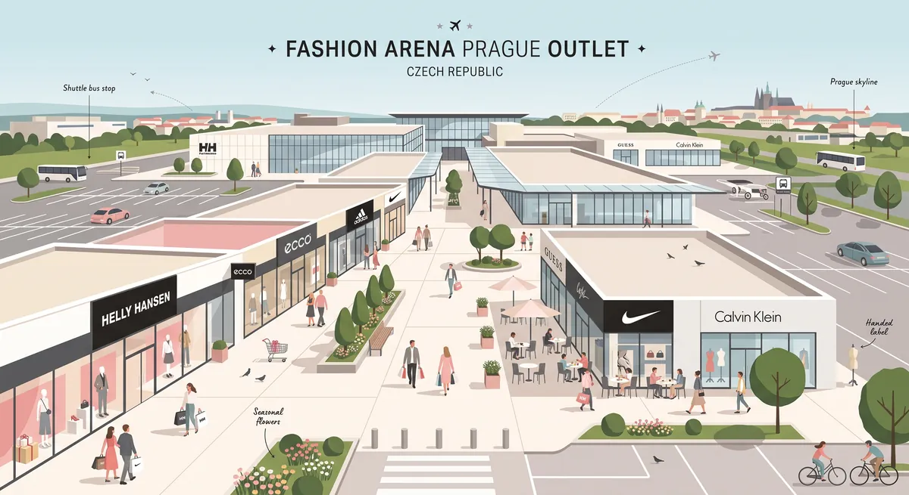
喜歡名牌？別錯過布拉格近郊這座大型 Outlet，匯集 HH、Ecco、Adidas、Nike、Calvin Klein、Guess 等中高階品牌，部份精品包款也會上架。搭配退稅，價格比亞洲更優惠，是高 CP 值買手的天堂。
創立於 1894 年的捷克國民皮鞋。氣墊皮鞋、休閒鞋與真皮皮帶極具性價比，折合台幣常在千元上下，耐磨好穿。
捷克頂級戶外機能品牌。防風防水衝鋒外套、保暖羽絨衣與雪地防寒褲，品質扎實，價格約為一線國際大牌三分之一。
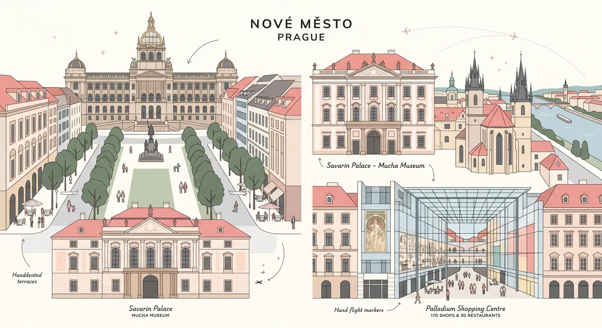
新城區 Nové Město：位於伏爾塔瓦河右岸、舊城區南方，是查理四世在14世紀時建立的城市，雖名為「新城」，實際上卻是歷史悠遠，面積更是老城區的三倍，以壯麗的哥德式與巴洛克式教堂聞名，當中最知名的地標為瓦茲拉夫廣場與國家博物館，前者為新城區的商業中心，隨處可見別出心裁的小店與特色咖啡廳；後者則是捷克尊榮的象徵，近代改革後的商業門市都在此生根發芽。
Municipal house café 下午茶(咖啡+蛋糕)：貼心安排於布拉格新藝術風格地標「市民會館（Municipal House）」內的百年皇家咖啡廳享用精緻下午茶（咖啡+蛋糕），感受典雅華麗的波希米亞午茶時光。
帕拉迪姆購物中心：位於捷克共和國布拉格市中心，於2007年開幕。該購物中心擁有170家商店和30家餐廳，零售面積達39,000平方公尺（420,000平方英尺）。此外，該建築內還設有總面積達19,500平方公尺（210,000平方英尺）的辦公空間。它是捷克共和國最大的購物中心之一，正對面是另一家購物中心－科特瓦百貨公司。
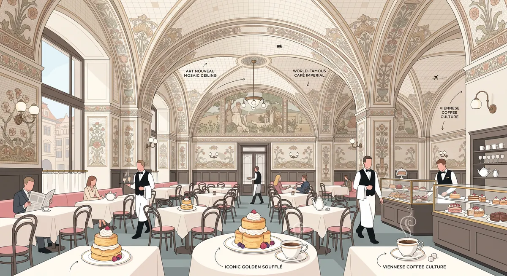
📍 帕拉迪姆斜對面步行 3 分鐘 (約 260m)
世界十大最美咖啡館之一，滿室百年馬賽克陶瓷浮雕，品嚐經典泡芙與香醇熱咖啡。
📍 查理大橋北側河灘 (步行約 18 分鐘)
群聚優雅天鵝的河畔秘境，傍晚時分能拍下夕陽金光灑在布拉格城堡與查理大橋的明信片大片。
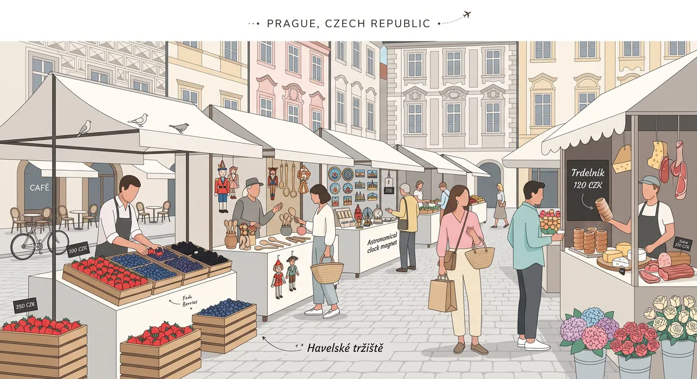
📍 老城區核心步道 (步行約 9 分鐘)
布拉格歷史最悠久的露天市集，販售新鮮莓果、手作木雕、天文鐘磁鐵與波希米亞小點。
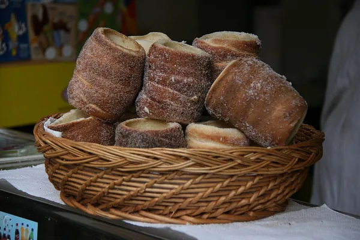
炭火烤外酥內軟，撒糖霜肉桂粉。
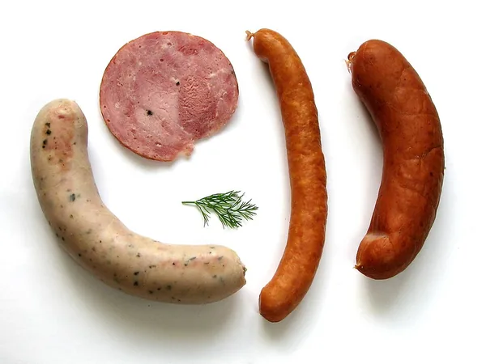
現烤多汁大肉腸佐黃芥末酸菜。
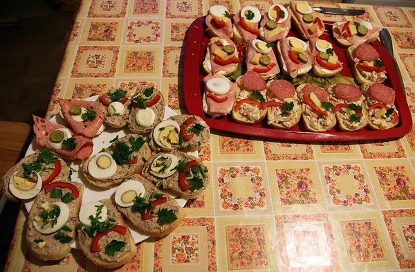
法棍麵包抹薯泥，鋪火腿與水煮蛋。
現拉滑順生啤，捷克國民之光。
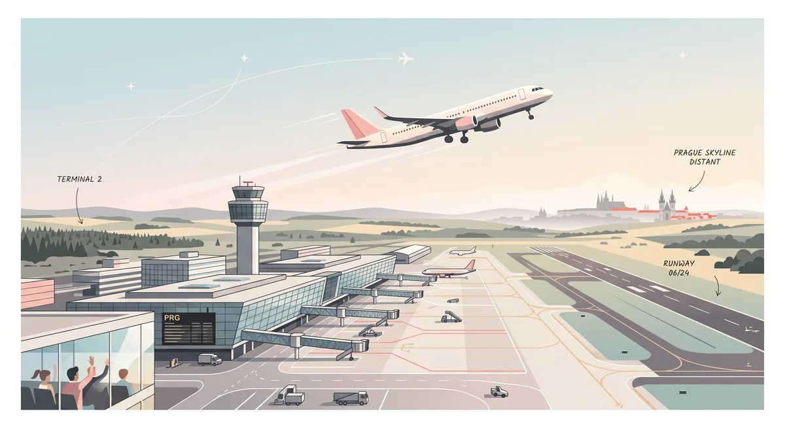
早餐後整理行囊，專車前往布拉格哈維爾國際機場（Václav Havel Airport Prague），在領隊協助下辦理登機與歐盟購物退稅手續，隨後搭乘星宇航空豪華客機直飛返回台灣。
班機於清晨平安抵達桃園國際機場，隨後搭乘專車返回台中與溫暖的家，圓滿結束 115 年港洲營建事業 8 天精彩的捷克布拉格之旅。
捷克電壓為 230V / 50Hz（台灣為 110V / 60Hz）。台灣帶去的 110V 專用電器（如吹風機、電捲棒等）絕對不能直接插上！手機、筆電、相機等充電器大多標示 100V–240V 寬電壓，直接插上轉接頭即可使用，不需變壓器。插座主要為 E 型（相容 C 型兩腳圓插頭和 F 型 Schuko 插座）。
本行程已包含領隊、導遊、司機之服務費（每位貴賓每日 €12 歐元 × 8 天，共計 €96 歐元）。
以下費用不包含：
1. 行李小費：每人每件 €2～5 歐元。
2. 房間小費：每房 €1～2 歐元。
公廁多需付費 10–20 克朗，請備些許零錢。
直飛歐洲航班每位可免費托運兩件限重 23 公斤的行李，另可手提一件限重 7 公斤的行李（超重需自付加收費用，實際依航空公司公告為準）。團體座位由航空公司依英文姓名順序統一安排，無法於出發前預先選位或指定靠窗／走道，領隊將盡最大協助。
• 房間內嚴禁吸菸，違者罰鍰須自行負擔；吧台零食與冰箱酒水皆需付費。
• 電熱水壺僅供煮水，不可放入咖啡粉、茶葉、火鍋料、泡麵等；請勿攜帶電湯匙或使用多插頭延長線以免跳電。
• 浴室地板多無排水孔，請勿泡澡以免水溢出；於浴缸內盥洗時務必將浴簾放入浴缸內，避免弄濕地毯影響樓下房客而遭飯店求償。
• 歐洲古城與冬季日夜溫差大，飯店房間僅設置冬天必備之暖氣，無冷氣設備。
1. 購物前先確認商家是否貼有「Global Blue」、「Tax Refund」貼紙。
2. 結帳時出示護照領取退稅單並親筆簽上姓名，妥善保管收據與退稅單。
3. 離境時於機場將購買物品、收據、退稅單一併出示給退稅櫃檯人員蓋章。請務必留意領隊宣達之退稅流程並保留齊全單據。
• 建議啟程前自行投保旅遊防疫、海外醫療等保險，並攜帶常備藥品。
• 未滿 14 歲兒童進入申根區規定：須提供能證明彼此關係之文件或父母（監護人）同意書並翻譯成英文，建議至戶政事務所辦理英文戶籍謄本（申請至少需 6 個工作天）。
• 財物安全：貴重物品、錢財與護照請務必隨身攜帶或存放飯店保險箱，切勿留置於遊覽車上或行李箱內（依歐洲保險法規，置於車上或房內遺失無法尋求賠償）。
捷克使用捷克克朗 CZK（Kč），約 1 克朗 ≈ 新台幣 1.4～1.5 元（以當日匯率為準）。冬令時間捷克比台灣慢 7 小時（當地中午 12 點為台灣晚上 7 點）。
官方語言捷克語，觀光區通英文。建議備歐洲網卡或漫遊，飯店多有 Wi-Fi。
嚴選台灣代購圈高人氣、大價差、高回購的十五款捷克代表作。以下皆以「即時克朗匯率」試算台幣價與省錢幅度。
共 15 款嚴選代購・價格依即時匯率換算
※ 價格為概略參考,實際以當地售價與當日匯率為準;商品圖片僅供示意。